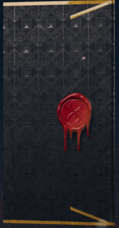
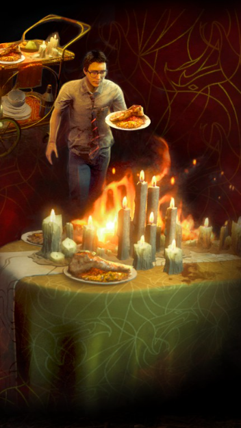
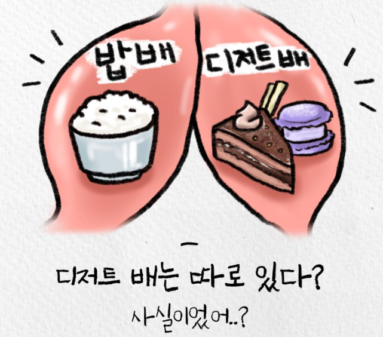
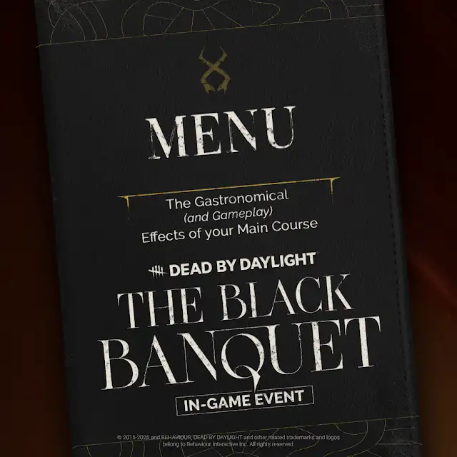

오늘의 메뉴
트라이얼 시작 시 메뉴가 무작위로 정해지고, 이에 따라 트라이얼 내내 지속되는 3가지 효과가 결정됩니다.
(멀리서 오신 손님이 무엇을 좋아하실지 몰라 다양한 음식을 준비했습니다. 메인 디시만 아닌 디저트도 준비되어있습니다.)

엔티티의 손끝에서 봉인된 초대장 한 장이 당신에게 도착했습니다. 촛불이 켜진 만찬 테이블 위로, 생존과 포식이 함께 차려지는 밤. 봉투를 열면, 더 이상 돌아갈 수 없습니다.

Dead by Daylight 10주년을 기념하는 한정 이벤트, 검은 연회가 시작됩니다. 오늘의 메뉴를 둘러싼 생존자와 살인마의 사투에 참여하세요.
메인 코스와 디저트, 두 개의 코스로 진행되는 이벤트입니다.
트라이얼 시작 시 메뉴가 무작위로 정해지고, 이에 따라 트라이얼 내내 지속되는 3가지 효과가 결정됩니다.
(멀리서 오신 손님이 무엇을 좋아하실지 몰라 다양한 음식을 준비했습니다. 메인 디시만 아닌 디저트도 준비되어있습니다.)

서빙 카트에서 메인 디시 음식을 연회 테이블에 서빙하세요. 연회 테이블에 음식 4개가 모이면 강력한 연회 성과를 받아 살인마로부터 부유함을 자랑하세요!
(음식을 서빙하다가 몰래 먹을 수도 있습니다.)
서빙 카트에 독을 풀어 조각을 오염시키세요. 판자, 발전기, 포탈까지 오염시켜 생존자의 만찬을 망칠 수 있습니다.
(괘씸한 생존자들이 살인마를 초대하지 않고 만찬을 즐기려 합니다! 희생제의 주인이 누군지 똑똑히 각인시켜 줄 때입니다. 가서 밥상을 엎으세요!)

발전기가 1개 남거나, 최후의 생존자가 될 시 서빙 카트에 있는 메인 디시가 디저트로 변경됩니다. 서빙 카트와 상호작용해 이동속도, 은신, 인내 효과 중 하나를 무작위로 얻습니다.
(비록 메인 디시를 배부르게 먹었지만, 두쫀쿠급 디저트가 있는데 어떻게 참나요?)
저녁 만찬에 초대장을 받아도 음식이 맛 없으면 의미가 없습니다.
아래에 저녁 만찬에 대한 메뉴판을 보여드리겠습니다.


"본 저녁 만찬의 마지막을 마무리시켜 줄 디저트 케이크입니다."
"빌 할아버지의 70년 이상 숙성된 잇몸과 치아, 그리고 네메시스의 좀비들로부터 얻은 눈알 조합으로 재탄생한 케이크입니다."
(특별히 고생한 살인마도 디저트만큼은 이번 만찬에서 섭취하실 수 있습니다.)